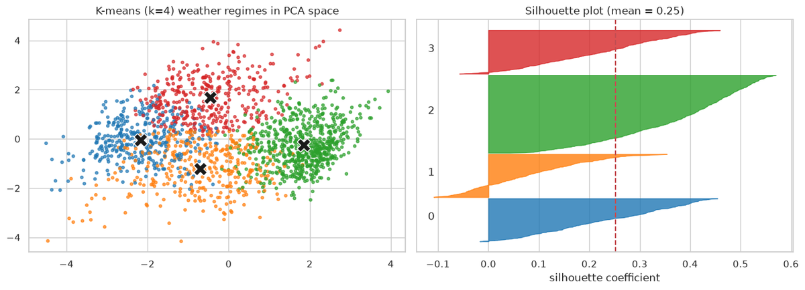
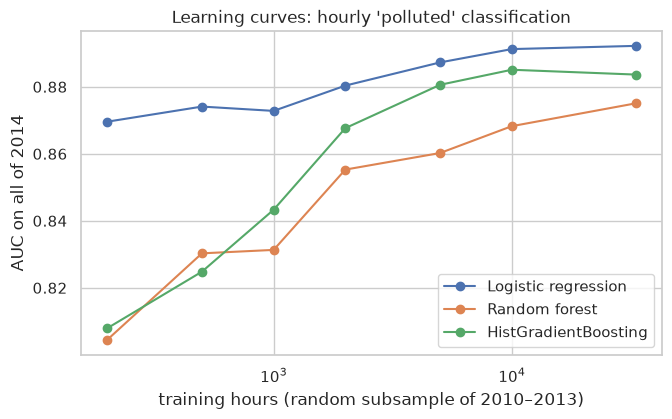

One dataset for every week
PM2.5 is the tiny particle pollution that makes smog dangerous. The data pairs it with the weather that drives it: wind, temperature, pressure, dew point, rain and snow.

Source: UCI Machine Learning Repository, Beijing PM2.5 Data (CC BY 4.0). Every model is trained on 2010–2013 and tested on 2014, so nothing ever sees the future.
Introduction: load, view, summarise
Import the data, check what is missing, and look at its shape before modelling.
- 2,067 PM2.5 readings are missing, so the notebook measures where the gaps fall before deciding how to handle them.
- PM2.5 is strongly right-skewed (log-normal), so models work on ln PM2.5.
- Bayes' rule and over-fitting are shown with small demos, then on this data.
Linear models
Predict ln PM2.5 from the weather, and classify polluted days.

Clustering, mixtures and PCA
Find weather regimes without using any pollution labels.

Hidden Markov models and Kalman filters
Hidden pollution regimes, short-term forecasts, and filling in missing hours.
Forecasting the next hours

Filling a gap with a Kalman filter

| Gap length | Kalman + weather vs. interpolation |
|---|---|
| 12 hours | about 10% lower error |
| 24 hours | about 20% lower error |
| 48 hours | about 28% lower error |
Combining models: trees and ensembles
Is a polluted day predictable from yesterday's and today's weather? Compare a single tree, forests, boosting and stacking.

| Model (2014) | Accuracy |
|---|---|
| Single decision tree | 0.72 |
| Boosting | 0.79 |
| Logistic regression | 0.827 |
| Stacking | 0.830 |
What did not work
Results are reported as they came out.

- Tomorrow's air-quality class: the HMM is only slightly better than a simple Markov chain, and accuracy differences are within noise.
- A Kalman filter with no weather input fills gaps no better than straight-line interpolation. The gain comes from the weather input.
- The 1-hour gain over persistence is small, so I treat it as modest.